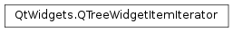

QTreeWidgetItemIterator¶
Detailed Description¶
The
PySide2.QtWidgets.QTreeWidgetItemIteratorclass provides a way to iterate over the items in aPySide2.QtWidgets.QTreeWidgetinstance.The iterator will walk the items in a pre-order traversal order, thus visiting the parent node before it continues to the child nodes.
For example, the following code examples each item in a tree, checking the text in the first column against a user-specified search string:
it = QTreeWidgetItemIterator(treeWidget) while it: if it.text(0) == itemText: *it.setSelected(True) ++itIt is also possible to filter out certain types of node by passing certain
flagsto the constructor ofPySide2.QtWidgets.QTreeWidgetItemIterator.
-
class
PySide2.QtWidgets.QTreeWidgetItemIterator(widget[, flags=QTreeWidgetItemIterator.All])¶ -
class
PySide2.QtWidgets.QTreeWidgetItemIterator(item[, flags=QTreeWidgetItemIterator.All]) -
class
PySide2.QtWidgets.QTreeWidgetItemIterator(it) Parameters: - flags –
PySide2.QtWidgets.QTreeWidgetItemIterator.IteratorFlags - it –
PySide2.QtWidgets.QTreeWidgetItemIterator - widget –
PySide2.QtWidgets.QTreeWidget - item –
PySide2.QtWidgets.QTreeWidgetItem
Constructs an iterator for the given
widgetthat uses the specifiedflagsto determine which items are found during iteration. The iterator is set to point to the first top-level item contained in the widget, or the next matching item if the top-level item doesn’t match the flags.See also
QTreeWidgetItemIterator.IteratorFlagConstructs an iterator for the given
itemthat uses the specifiedflagsto determine which items are found during iteration. The iterator is set to point toitem, or the next matching item ifitemdoesn’t match the flags.See also
QTreeWidgetItemIterator.IteratorFlagConstructs an iterator for the same
PySide2.QtWidgets.QTreeWidgetasit. The current iterator item is set to point on the current item ofit.- flags –
-
PySide2.QtWidgets.QTreeWidgetItemIterator.IteratorFlag¶ These flags can be passed to a
PySide2.QtWidgets.QTreeWidgetItemIteratorconstructor (OR-ed together if more than one is used), so that the iterator will only iterate over items that match the given flags.Constant Description QTreeWidgetItemIterator.All QTreeWidgetItemIterator.Hidden QTreeWidgetItemIterator.NotHidden QTreeWidgetItemIterator.Selected QTreeWidgetItemIterator.Unselected QTreeWidgetItemIterator.Selectable QTreeWidgetItemIterator.NotSelectable QTreeWidgetItemIterator.DragEnabled QTreeWidgetItemIterator.DragDisabled QTreeWidgetItemIterator.DropEnabled QTreeWidgetItemIterator.DropDisabled QTreeWidgetItemIterator.HasChildren QTreeWidgetItemIterator.NoChildren QTreeWidgetItemIterator.Checked QTreeWidgetItemIterator.NotChecked QTreeWidgetItemIterator.Enabled QTreeWidgetItemIterator.Disabled QTreeWidgetItemIterator.Editable QTreeWidgetItemIterator.NotEditable QTreeWidgetItemIterator.UserFlag
-
PySide2.QtWidgets.QTreeWidgetItemIterator.__iter__()¶ Return type: PyObject
-
PySide2.QtWidgets.QTreeWidgetItemIterator.__next__()¶ Return type: PyObject
-
PySide2.QtWidgets.QTreeWidgetItemIterator.__iadd__(n)¶ Parameters: n – PySide2.QtCore.intReturn type: PySide2.QtWidgets.QTreeWidgetItemIteratorMakes the iterator go forward by
nmatching items. (If n is negative, the iterator goes backward.)If the current item is beyond the last item, the current item pointer is set to 0. Returns the resulting iterator.
-
PySide2.QtWidgets.QTreeWidgetItemIterator.__isub__(n)¶ Parameters: n – PySide2.QtCore.intReturn type: PySide2.QtWidgets.QTreeWidgetItemIteratorMakes the iterator go backward by
nmatching items. (If n is negative, the iterator goes forward.)If the current item is ahead of the last item, the current item pointer is set to 0. Returns the resulting iterator.
-
PySide2.QtWidgets.QTreeWidgetItemIterator.value()¶ Return type: PySide2.QtWidgets.QTreeWidgetItem
© 2018 The Qt Company Ltd. Documentation contributions included herein are the copyrights of their respective owners. The documentation provided herein is licensed under the terms of the GNU Free Documentation License version 1.3 as published by the Free Software Foundation. Qt and respective logos are trademarks of The Qt Company Ltd. in Finland and/or other countries worldwide. All other trademarks are property of their respective owners.